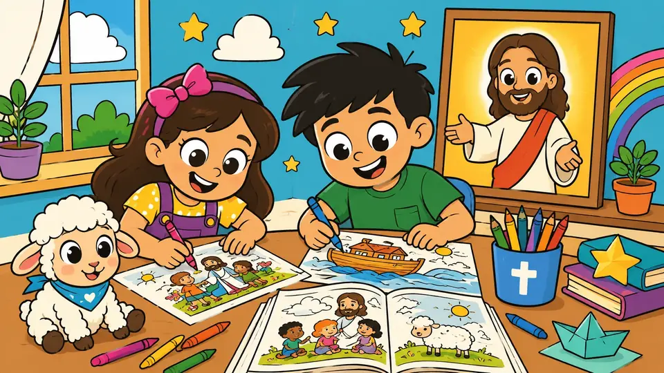
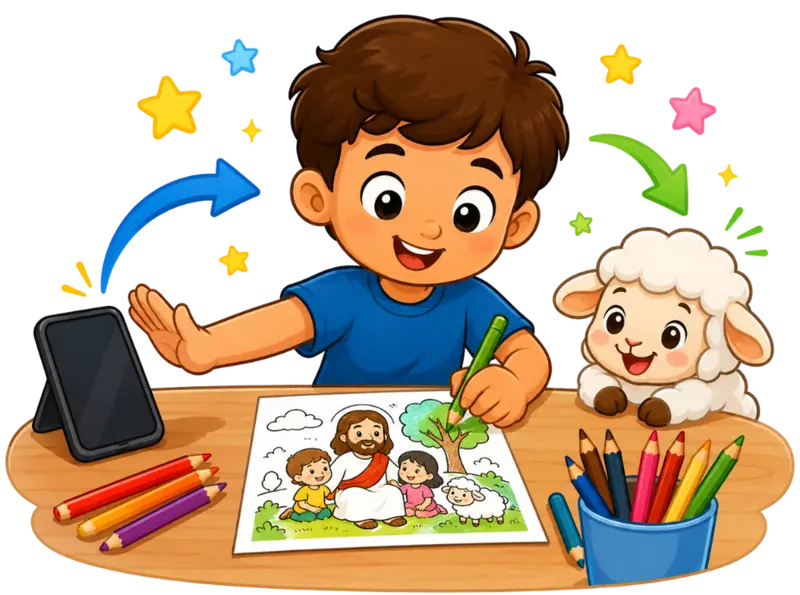
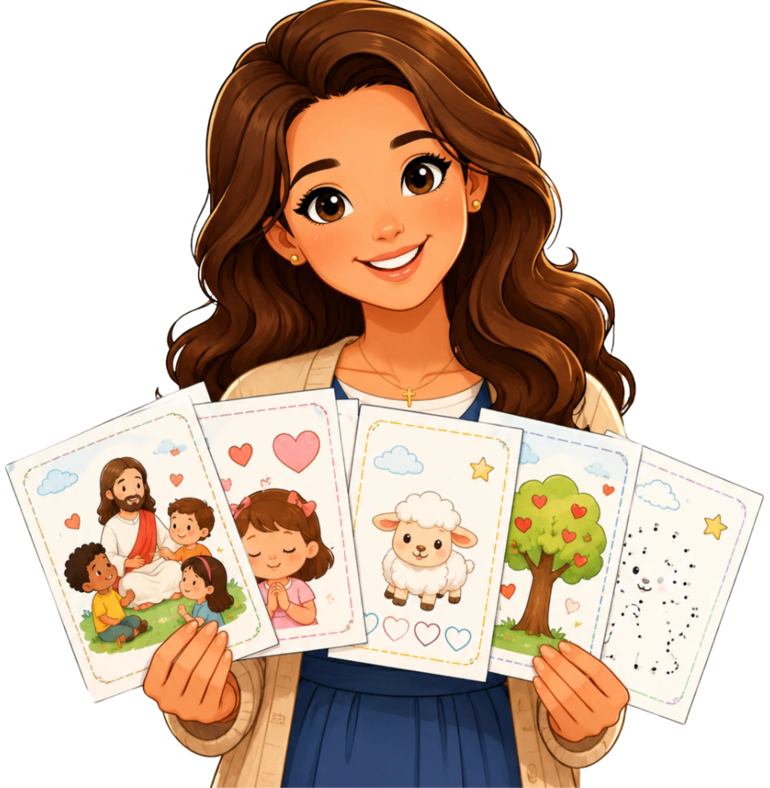
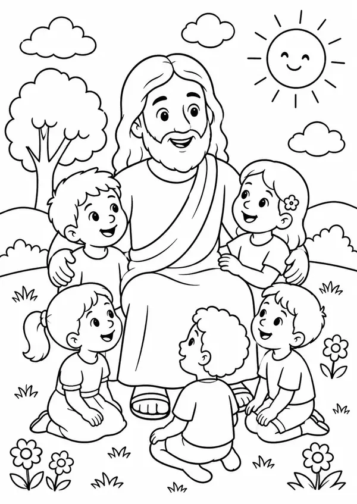
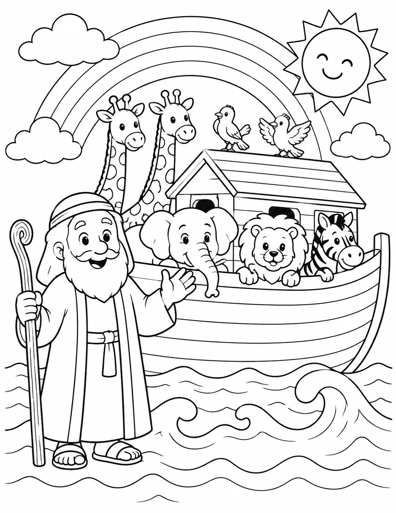
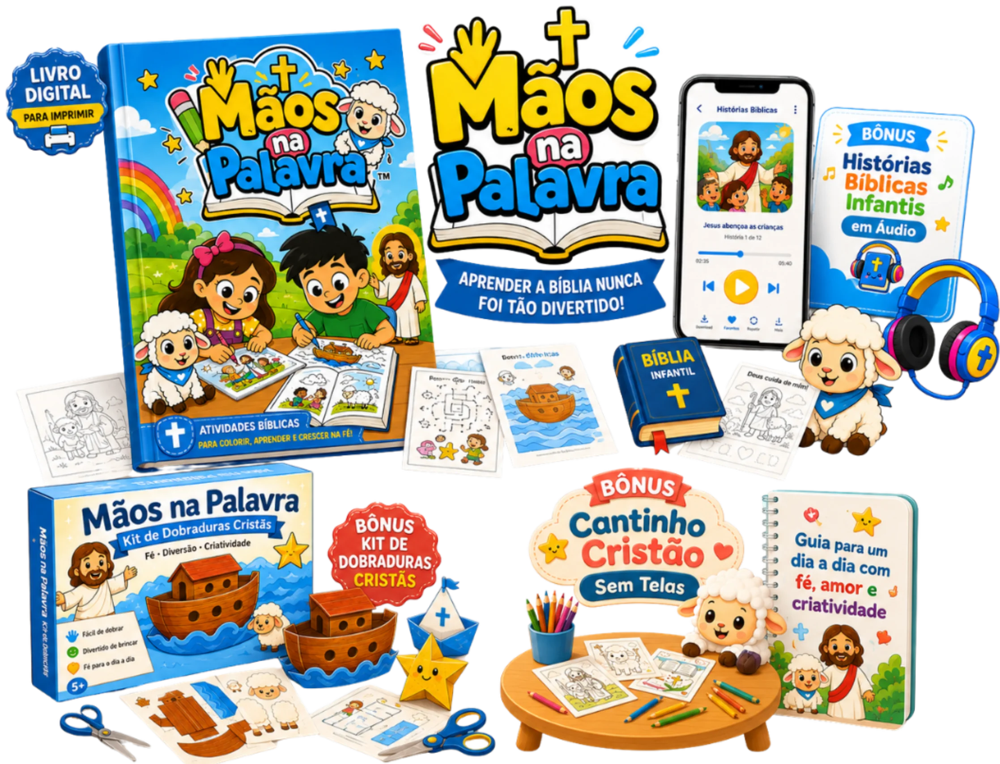

Tire seu filho das telas por alguns minutos e coloque Jesus em suas mãos.
Acesse nossa área de membros exclusiva com centenas de atividades Cristãs para Imprimir, organizadas para seu filho colorir, brincar e aprender sobre Jesus longe das telas.

Em vez de mais tela, seu filho recebe:
Cor
Estímulo direto à coordenação motora fina e expressão artística real.
Calma
Momentos de quietude e foco que acalmam a mente infantil.
Fé
Ensinamentos bíblicos simples que plantam a semente do Evangelho.
Criatividade
Espaço livre para imaginar, criar e construir com as próprias mãos.
Histórias bíblicas
Narrativas sobre a Palavra adaptadas para a linguagem infantil.
Atividades longe do celular
Diversão analógica e interativa longe de qualquer tela.
Você reconhece essa situação?
Você sabe que tela demais não faz bem. Mas a rotina pesa. A casa exige. O trabalho exige. E, às vezes, o celular parece a única forma de conseguir alguns minutos de silêncio.
-
A criança pede “só mais um vídeo”
-
Fica irritada quando você tira
-
Repete falas e músicas que você não ensinou
-
Corre para la tela quando está entediada
-
E você sente culpa depois
Mas talvez o problema não seja falta de amor. Talvez falte uma alternativa simples para colocar no lugar.
Criança não fica com as mãos vazias por muito tempo.
Não adianta apenas tirar a tela. Quando você tira algo da mão de uma criança, precisa colocar algo melhor no lugar.
Algo que ela possa tocar. Colorir. Olhar. Imaginar. Perguntar. E que, ao mesmo tempo, aproxime ela de Jesus.

Apresentamos o Portal Mãos na Palavra™
Uma área de membros completa com materiais cristãos infantis para imprimir, organizada em seções práticas e criada por uma mãe cristã e professora de jardim de infância, para ajudar crianças a se divertirem longe das telas enquanto aprendem sobre Jesus.
🔑 Você recebe o acesso imediato à nossa área de membros no seu e-mail.
📁 As atividades estão organizadas em seções temáticas (colorir, dobraduras, histórias).
🖨️ Você baixa e imprime apenas o que quiser usar no dia, quantas vezes precisar.

Como funciona a Área de Membros Mãos na Palavra™
Seção de Desenhos Bíblicos
Mais de 100 desenhos lúdicos e expressivos retratando as mais belas passagens da Bíblia para colorir.
Seção de Histórias Bíblicas
Textos explicativos e histórias adaptadas que conectam as atividades com a Palavra de Deus.
Seção de Atividades Práticas
Desafios manuais divertidos como labirintos, caça-palavras e jogos que estimulam o aprendizado cristão.
Seção Momento de Calma
Atividades com traços focados em proporcionar momentos de silêncio, concentração e quietude.
Seção de Dobraduras e Recortes
Modelos de personagens e cenários bíblicos para imprimir, recortar, dobrar e brincar.
Atualizações Constantes
Novos desenhos, atividades e recursos são adicionados à área de membros sem custo extra.




Feito para crianças.
Mas pensado para aliviar a rotina dos pais.
-
Você não precisa procurar desenhos na internet
-
Não precisa montar atividade do zero
-
Não precisa inventar brincadeira quando está cansada
-
Não precisa transformar a retirada da tela em briga
-
E ainda cria um momento cristão dentro de casa
Além das seções de atividades, você ganha 3 recursos exclusivos

Plataforma de Histórias Bíblicas Infantis
Áudios curtos com histórias bíblicas para tocar enquanto seu filho colore. Assim, a tela deixa de ser o centro e a história do Senhor conduz o momento.

Kit de Dobraduras Cristãs
Modelos simples para imprimir, dobrar e montar figuras como arca, ovelha, estrela e barquinho. Mais uma atividade manual para ocupar as mãos longe del celular.

Guia Cantinho Cristão Sem Telas
Um passo a passo para transformar um espaço simples da sua casa em um lugar de cor, calma e fé. Sem móveis novos. Sem complicação. Usando coisas que você já tem.
O que dizem as famílias que já usam
Escolha o plano ideal para sua família
Apenas Colorir
Você recebe:
- ✔️ Seção de Desenhos Bíblicos (70 desenhos bíblicos para colorir)
- ✔️ Seção de Histórias Bíblicas (Textos adaptados para as crianças)
- ❌ Seção de Atividades Práticas e Jogos
- ❌ Seção Momento de Calma e Foco
- ❌ Todos os Bônus e Áudios

Acesso Completo
Você recebe tudo:
- ✔️ Seção de Desenhos Bíblicos (+100 desenhos)
- ✔️ Seção de Histórias Bíblicas (Textos adaptados)
- ✔️ Seção de Atividades Práticas (Jogos e labirintos)
- ✔️ Seção Momento de Calma (Silêncio e foco)
- ⭐ Seção de Dobraduras e Recortes
- 🎁 BÔNUS: Histórias Bíblicas em Áudio
- 🎁 BÔNUS: Guia Cantinho Cristão Sem Telas
Teste sem risco
Você recebe o acesso, imprime o material e testa com seu filho. Se sentir que o Mãos na Palavra™ não é para sua casa, basta pedir o reembolso dentro do prazo de garantia.
Quer testar a qualidade antes de comprar?
Baixe gratuitamente 3 desenhos bíblicos exclusivos para imprimir hoje mesmo e fazer um teste com seu filho.
Perguntas Frequentes (FAQ)
Ele é 100% digital. Você recebe os dados de acesso à nossa Área de Membros exclusiva por e-mail. Lá dentro, você pode navegar pelas seções, ouvir os áudios e baixar os PDFs para imprimir como preferir.
O acesso chega no seu e-mail logo após a confirmação do pagamento.
Não. Como o material é digital, você não paga frete e recebe tudo online.
É ideal para crianças de 3 a 8 anos, com desenhos e atividades simples, cristãs e fáceis de usar.
Sim. Além dos desenhos, ele recebe histórias, dobraduras e atividades para brincar longe das telas.
Não. Você pode imprimir só as páginas que quiser usar no dia.
Sim. Depois de comprar, você pode imprimir novamente sempre que precisar.
Sim. As atividades foram criadas com foco em Jesus, histórias bíblicas e valores cristãos.
Não. O material foi feito para ser simples e puxar conversas naturais sobre Jesus com seu filho.
A ideia é ajudar você a trocar alguns momentos de tela por atividades cristãs, sem briga e sem culpa.
Você recebe acesso completo ao portal Mãos na Palavra™, dividido em seções exclusivas: Desenhos para colorir, Histórias em áudio, Dobraduras cristãs, Jogos educativos e o Guia Cantinho Cristão Sem Telas.
Eles estão organizados em uma seção exclusiva dentro da própria área de membros. Você pode dar play diretamente pelo celular ou tablet enquanto seu filho colore as atividades impressas.
Sim. O material também pode ser usado em casa, célula, ministério infantil ou aula bíblica.
Sim. Ao tocar no botão, você será levado para uma plataforma segura de pagamento online.
Você tem garantia. Se sentir que não é para sua casa, basta pedir reembolso dentro do prazo informado.